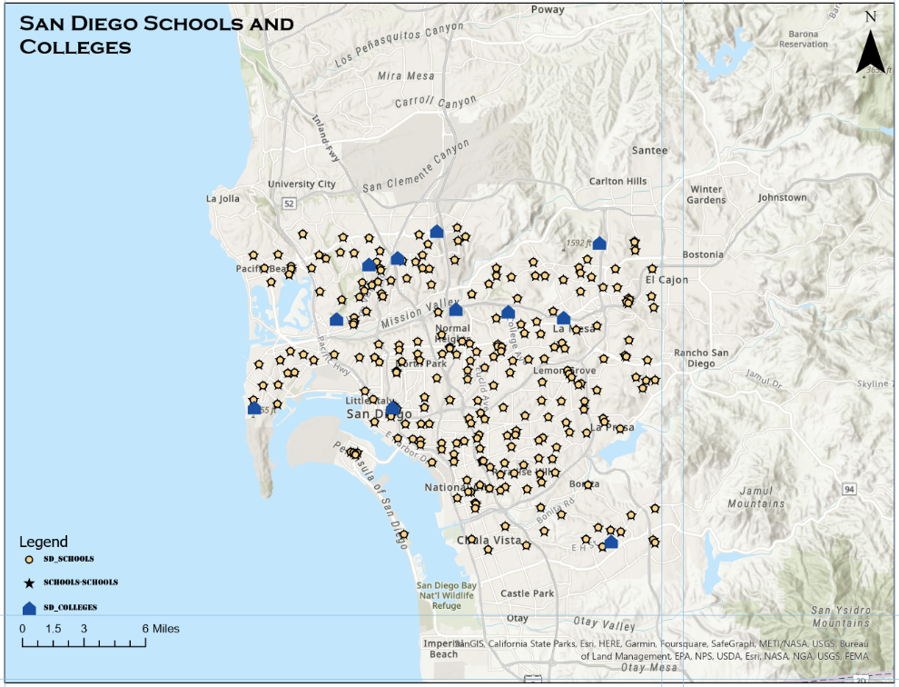
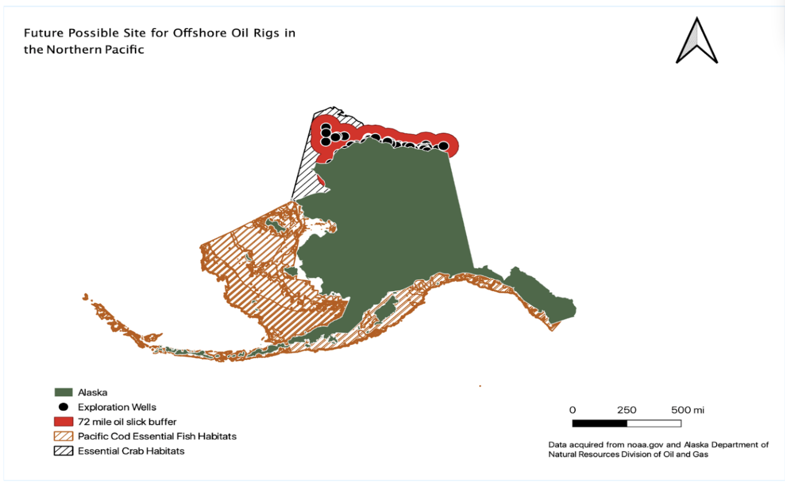
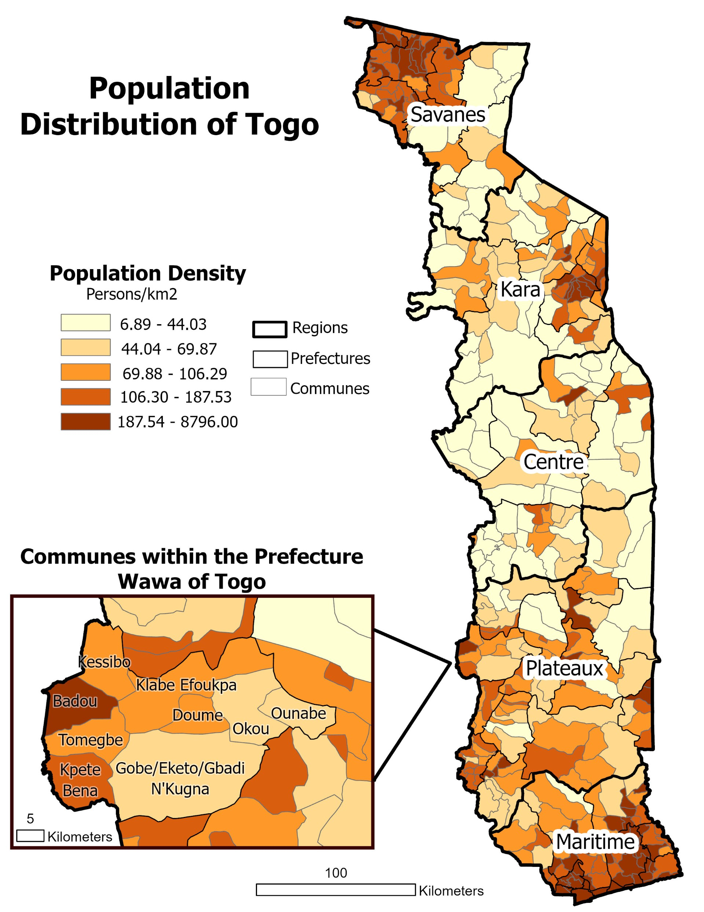
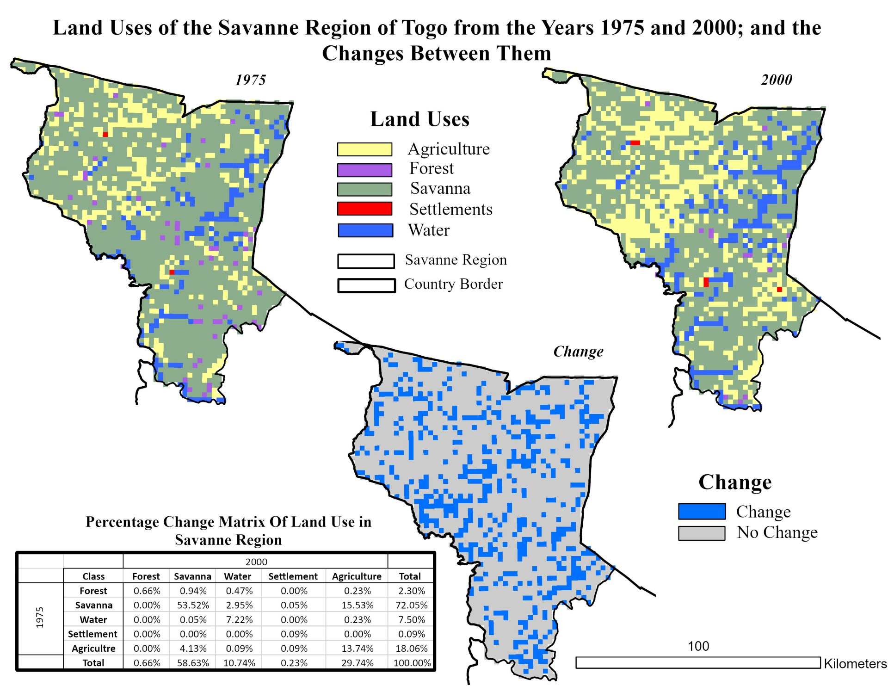

Applied GIS Techniques
A curated collection of GIS methods and spatial analyses applied across academic and research projects.
A curated collection of GIS methods and spatial analyses applied across academic and research projects.

This map layout was made utilizing ArcGIS Pro and was one of the first map I have created. This showcases my ability to utilize point source data to show information visually.

This map was generated in QGIS as part of a final research project for my first ever course in geographic information. This map illustrates the "best-case scenario" of a oil spill along the Alaskan coast and its affects on essential crab habitats.

This map was created in ArcGIS Pro to visualize popualtion distribution across Togo, Africa. It demonstrates the use of choropleth symbology to efficently communicate demographic patterns through the use of a color gradient.

This project explored raster analysis techniques to visualize land use changes over time. This was done by comparing data from multiple years, where I highlighted spatial patterns of development and environmental transformation.
This is a method I used for creating polygons of the neighborhoods in New York City, focused on georeferencing a historical map to align them with real-world coordinates. It illustrates my ability to integrate and digitize spatial data for accurate mapping analysis.